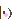

| 2012/03 08 Thu | ヽ(・∀・) |
質問に答えちゃうよ〜
自分なりにまとめて答えるのでね!!
よろしくお願いします

握手会ではどんな事を話せばいいですか？
いろいろ話しましょう！
握手してる時間が短いからあんまり長くは話せないのでね〜(´・д・｀)
例えば
好きな○○は何？みたいなのがいいかな〜
生駒ちゃんの今まで発表していない趣味とか好きなものがあったら教えてほしい
わたくしは読書が大好きです♪マンガもたくさん読みます!!
てかそれ以外...ない！
男の子にはどんな服着てほしい？
うーん...
これといってこだわりはありません〜(´∀｀)
好きな服着ましょ！
最近の身長何センチだったの？
１５３?...
せめて１５５?にはなりたい!!
いこまちゃんの好きな言葉は？
思えば叶う♪
いい言葉

好きなマンガは何？
少年マンガ！
特にナルトが好きです!!
でも上京して実家にはナルト全巻あったけど今無い。集める!!
女で剣道部ってどう思いますか？
とってもカッコいいです〜(≧▼≦)
うちはああやって敵に立ち向かっていけないから...
かずみさんも剣道やってたわよ！
野球ってどう思う？
いいと思います(o⌒∇⌒o)うちはボール投げれるけどスピードショボすぎる。
秋田って田舎なのかな？
田舎よ。
イオンがあるのよ！
イオンが素晴らしいのよ！イオンに行けば全て揃うのよ！
握手会で各地回って、一番おいしいと思った食べ物は何？
うーん全て美味しかったからな〜(´∀｀)
決められん！
乃木坂で一番おもしろいメンバーは？
これもうーん(´・д・｀)一回面白いNo.1決定戦しようかな？
最近のマイブームは？
昼寝

ファンレターって1日にどれくらい届く？
いつもいくつかまとまって渡してもらうのでわかりません(T△T)
みなさんお手紙本当にありがとうございます!!
元気になります


兄弟はいますか？
弟がいます♪
いぶりがっこ好き？
美味しいですよね〜(´∀｀)基本がっこ好きです。浅漬けが一番好き

生駒ちゃんの田舎もんのしゃべり方とか、ゆっくりしたところが大好きなんですが、そう言われてうれしい？
そう思って頂けて本当にありがとうございます!!
滑舌とか悪くて...
田舎者で...
だめだめで...
だから自分なんて周りのみんなと比べると可愛くないし、キャラも変だしダメなやつだな〜と思っているので、救われます!!
本当にありがとうございますo(T□T)o
では...
へばなっ!!
コメント(142)
2012/03/08 17:12